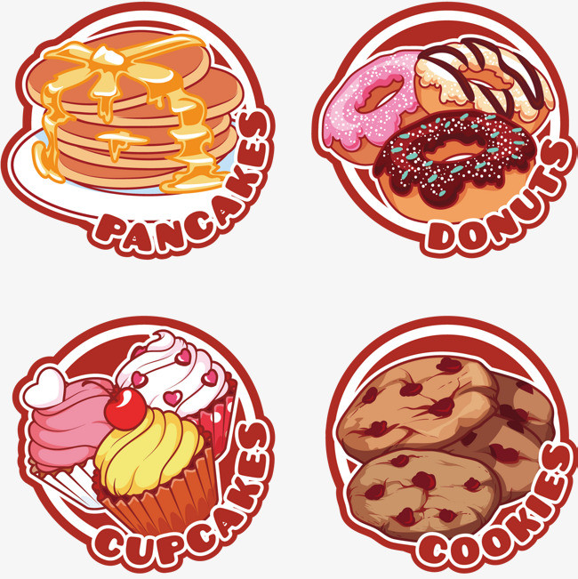

Assortment of fresh baked fruit breads and muffins 5.50
Natural cereal of honey toasted oats, raisins, almonds and dates 3.00
Vanilla flavored batter with malted flour 7.50
Scrambled eggs, roasted red pepper and garlic, with green onions 7.50
Regular coffee 2.50
Chocolate espresso with milk 4.50
Whiskey and coffee 5.00
Hot tea, except not hot 3.00
Click on the milk, the cake1, or the cake2 to go to a new page and read more about the topic:
Cake is a form of sweet food made from flour, sugar, and other ingredients, that is usually baked. In their oldest forms, cakes were modifications of bread, but cakes now cover a wide range of preparations that can be simple or elaborate, and that share features with other desserts such as pastries, meringues, custards, and pies.
The most commonly used cake ingredients include flour, sugar, eggs, butter or oil or margarine, a liquid, and leavening agents, such as baking soda or baking powder. Common additional ingredients and flavourings include dried, candied, or fresh fruit, nuts, cocoa, and extracts such as vanilla, with numerous substitutions for the primary ingredients. Cakes can also be filled with fruit preserves, nuts or dessert sauces (like pastry cream), iced with buttercream or other icings, and decorated with marzipan, piped borders, or candied fruit.
As a foodie. Snack not because you're hungry but because your mouth is lonely.
Life is like a box of chocolates, you never know what you are gonna get.